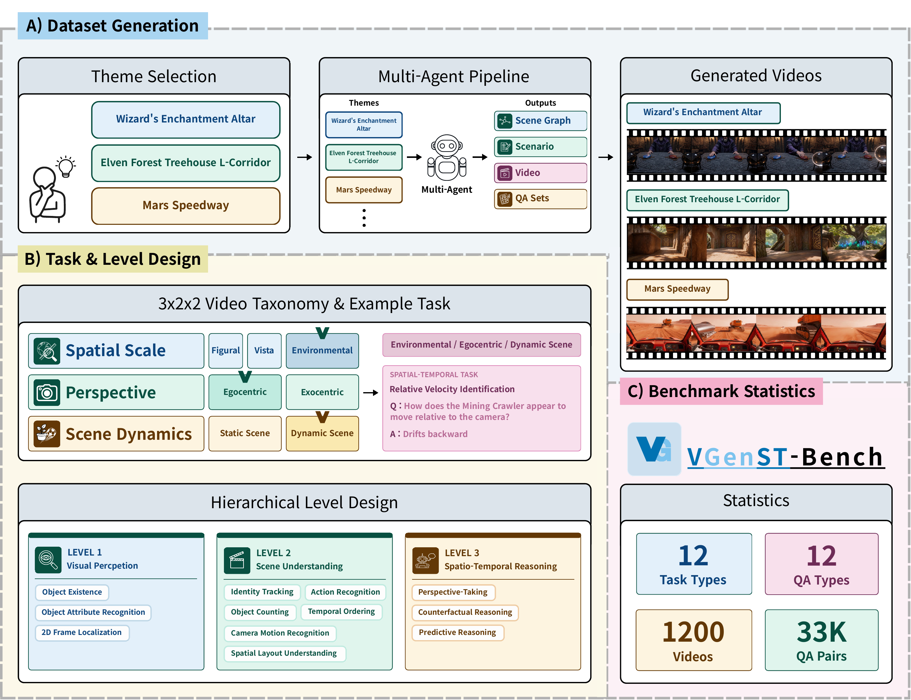
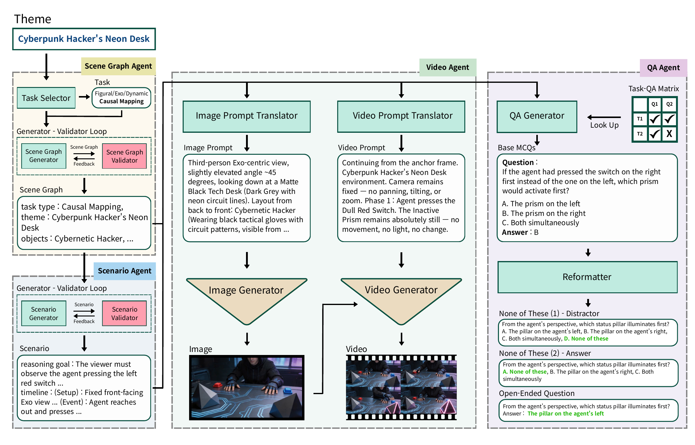

Each combination of Spatial scale × Perspective × Scene dynamics maps to one task. 12 tasks × 4 themes shown.
static/videos/<TASK>_theme<N>.mp4
Spatio-temporal reasoning is a core capability for Multimodal Large Language Models (MLLMs) operating in the real world. However, existing spatio-temporal reasoning benchmarks primarily rely on static image sets or passively curated video data, which limits the evaluation of fine-grained reasoning capabilities.
In this paper, we introduce VGenST-Bench, a video benchmark that employs generative models to actively synthesize highly controlled and diverse evaluation scenarios. To construct it, we propose a multi-agent pipeline incorporating a human quality control stage, ensuring the quality of all generated videos and QA pairs.
We establish a comprehensive 3 × 2 × 2 video taxonomy, encompassing Spatial Scale, Perspective, and Scene Dynamics, paired with a hierarchical task suite that decouples low-level visual perception from high-level spatio-temporal reasoning. By shifting the paradigm from passive curation to active synthesis, VGenST-Bench enables fine-grained diagnosis of spatio-temporal understanding in MLLMs.
VGenST-Bench is a video benchmark that uses video generative models to actively synthesize controlled scenarios for evaluating spatio-temporal reasoning in MLLMs.

Starting from a theme, four agents operate in sequence — Scene Graph, Scenario, Video, and QA — followed by a two-stage human quality-control review.

VGenST-Bench organizes 12 reasoning tasks under a 3 × 2 × 2 video taxonomy (spatial scale × perspective × scene dynamics), paired with 12 QA types in a three-level cognitive hierarchy that progresses from low-level perception to high-level spatio-temporal reasoning.
| Egocentric | Exocentric | |||
|---|---|---|---|---|
| Static | Dynamic | Static | Dynamic | |
| Figural | MCMulti-Container Attribute Mapping |
QCQuantity Change Tracking |
CIContainer Intersection Inference |
CMCausal Mapping |
| Vista | DEDirection Estimation |
IOInteracted Object Identification |
HOHeight Ordering |
VIVisibility Identification |
| Environmental | DSDirectional Signage Grounding |
RVRelative Velocity Identification |
LSLandmark Spatial Composition |
BTBehavioral Trigger Identification |
@misc{park2026vgenstbenchbenchmarkspatiotemporalreasoning,
title = {VGenST-Bench: A Benchmark for Spatio-Temporal Reasoning via Active Video Synthesis},
author = {Jinho Park and Youbin Kim and Hogun Park and Eunbyung Park},
year = {2026},
eprint = {2605.22570},
archivePrefix = {arXiv},
primaryClass = {cs.CV},
url = {https://arxiv.org/abs/2605.22570},
}